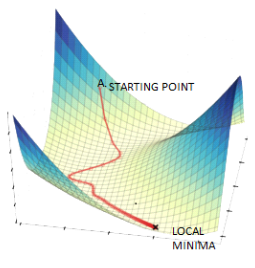

Introduction to Natural Language Processing (NLP)
Natural Language Processing (NLP) is a field of AI focused on the interaction between computers and humans through natural language. The ultimate objective of NLP is to read, decipher, understand, and make sense of the human languages in a manner that is valuable.
Deep Learning in NLP
Deep learning, a subset of machine learning, uses algorithms inspired by the structure and function of the brain called artificial neural networks. In NLP, deep learning has been applied to a number of tasks including speech recognition, natural language understanding, and text generation.
Text Embeddings
Text embeddings are a type of word representation that allows words with similar meaning to have a similar representation. They are essential for deep learning models in NLP to process and analyze large amounts of text data.

Understanding Gradient Descent
Gradient Descent is a core optimization technique in deep learning that adjusts the parameters of the neural network algorithms. It is used extensively to minimize the loss function of the models during training.
To continue learning about Machine Learning, Natural Language Processing and Large Language Models, proceed to the Hugging Face Course.